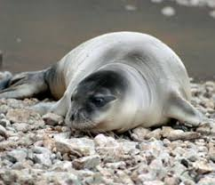

Foca monje del Mediterráneo
 La foca monje del Mediterráneo, o Monachus monachus, una especie en peligro de extinción, encuentra su último refugio en Grecia, donde se estima que vive casi la mitad de la población mundial, principalmente en las islas del Egeo.
Amenazas
La caza indiscriminada y la destrucción de su hábitat son las principales causas de la disminución de la población de la foca monje.